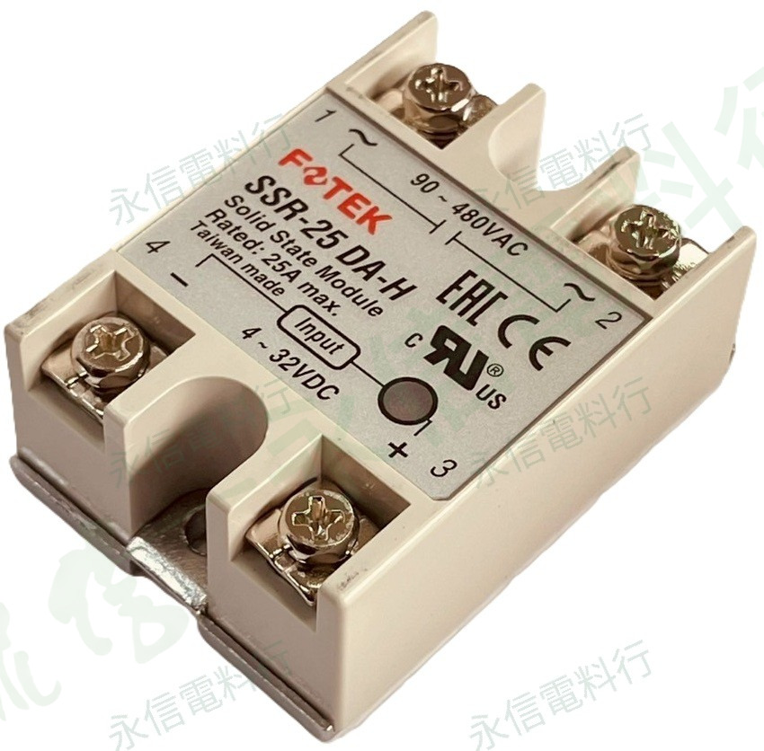

商品照片已套用永信電料行淡綠灰斜向浮水印；點選縮圖可切換照片。
PRODUCT OVERVIEW
銘牌規格重點
- 完整型號：SSR-25DA-H
- 控制方式：DC 控制 AC 負載
- 控制輸入：4～32VDC
- 負載輸出：90～480VAC
- 負載電流：25A max.
- 端子配置：輸入 4（－）／3（＋）；負載 1／2（AC）
NAMEPLATE INFORMATION
銘牌規格表
品牌陽明電機 FOTEK
完整型號SSR-25DA-H
產品類型高電壓型固態繼電器（SSR）
控制方式DC 控制 AC 負載
控制輸入4～32VDC
負載輸出90～480VAC
負載電流25A max.
控制端子4（－）／3（＋）
負載端子1／2（AC）
商品照片2 張
本表只整理本批實拍商品銘牌可確認的資料；實際規格請依產品銘牌、原廠型錄及現場需求核對。未在照片中標示的電氣數值不自行推定。
VERIFIED SPECIFICATION DATA
規格補充與原廠核對
控制輸入4–32VDC
負載輸出90–480VAC
最大負載電流25 A
系列保護／絕緣原廠系列資料列有 >4kV 電介強度、>100MΩ/500VDC 絕緣及過熱／突波保護
SSR／SCR 額定電流不是任何散熱條件下都可連續承載的保證值；實際選用仍須依負載種類、散熱、環境溫度與原廠降額資料確認。 系列共通資料僅用於補充辨識，不取代完整型號之原廠規格書與本件實物銘牌。